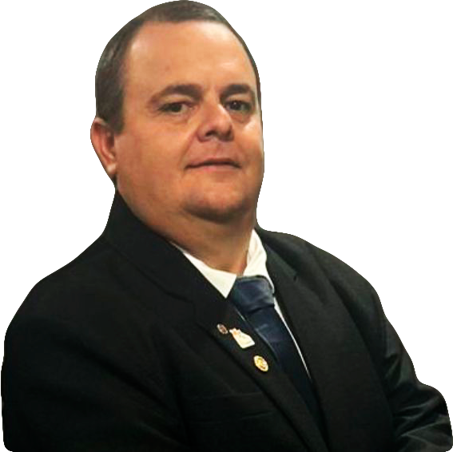

Rotary Club de Bauru
Ano rotário 2024-25 - Plano de Atividades
Curriculum do Presidente
Rafael Bien Henrique
Rafael Bien Henrique, 40 anos nascido em 17/02/1982, curso em Administração Empresa (incompleto), foi Gerente Regional da Estre Ambiental (maior empresa de limpeza urbana e ambiental no Brasil), em 2019 comprou a CICLO Residuos de Ribeirão preto e trouxe para Bauru, sua área de atuação é a do gerenciamento de residuos, coleta e transportes e locação de equipamentos.
Casado há 16 anos com Flavia Giedry dos Santos, pai de Ricardo Roberto Henrique Neto, tem como hobby passeios com a família, foi associado do Rotary Clube de Piratinga, clube do qual foi secretário no ano 2015/16 e presidente no ano rotário 2016/17.